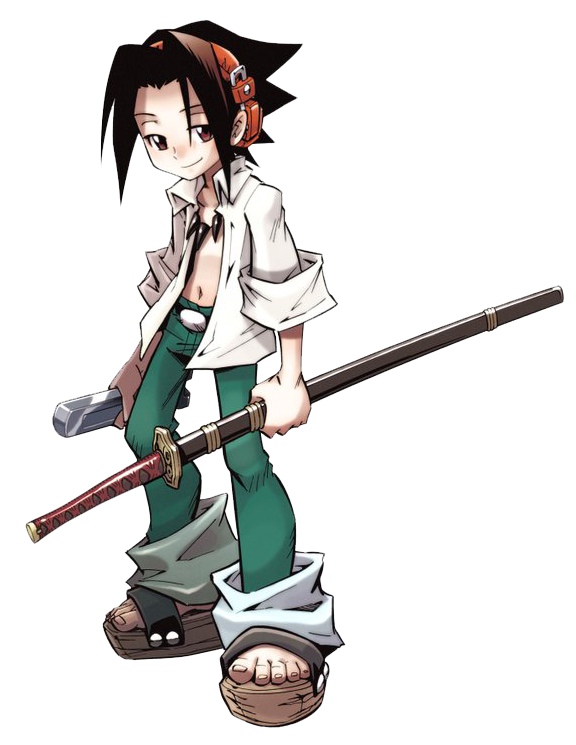
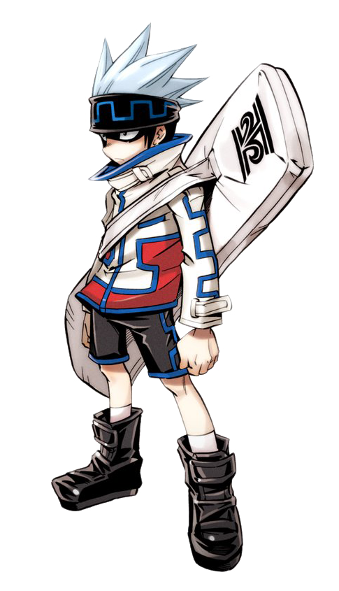
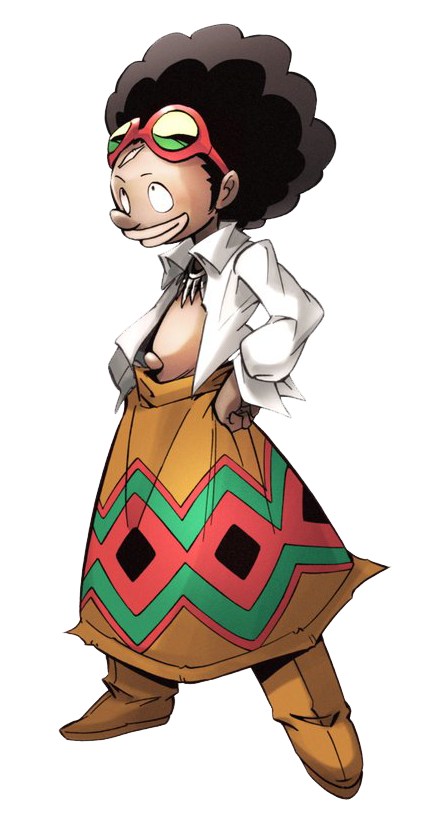
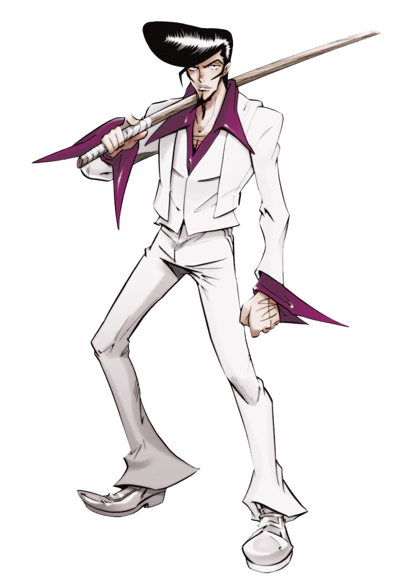
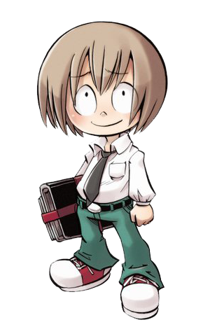

Yoh Asakura
Yoh Asakura es el personaje principal del anime y del manga Shaman King. Es el prometido y futuro esposo de Anna Kyōyama y es, en la tercera vida de Hao Asakura, su hermano gemelo menor. Yoh es uno de los chamanes más fuertes dentro de la historia. En Funbari no Uta se sabe que se casó con Anna y tuvieron un hijo, Hana Asakura, que es cuidado por Tamao Tamamura.
Ren Tao
Ren Tao es un personaje ficticio del anime y manga Shaman King. En un principio es un enemigo de Yoh, pero a medida que va avanzando la historia, se convierte en uno de sus mejores amigos. Es uno de los chamanes más poderosos dentro de la historia. En Funbari no Uta se sabe que se casó con Jeanne y tuvieron un hijo, Men Tao.
.png)
HoroHoro
Horo Horo quiere ser el rey chamán por la sencilla razón de que quiere plantar un gran campo de plantas al rededor del mundo, para que no se pierdan los espíritus Koropokkurus (como su espíritu acompañante). Es hermano de Pirica Usui y su padre es Lycan Usui, además es uno de los amigos de Yoh Asakura. Durante la segunda ronda del torneo de chamanes forma parte del Equipo "The Ren" junto con Ren Tao y Chocolove McDonell.
Chocolove McDonell
Chocolove McDonell es un comediante chamán que quiere ganar el Torneo de los chamanes para poder llevar "la brisa de la risa" al mundo. Su sueño es ser un buen comediante, pues nadie, más bien dicho, sólo Pirica y Tamao se ríen de sus chistes malos. Se une al equipo de Yoh Asakura, pero cuando les informan que los equipos deben ser de tres integrantes, se pasa al equipo de Ren Tao, The Ren. Sus espíritus acompañantes son Mic y Pascal Avaf.
Ryunosuke Umemiya
Ryunosuke Umemiya o simplemente conocido como Ryu, usualmente llamado "Ryu con Espada de Madera", es el jefe de una banda de maleantes, y personaje de la serie de manga y anime de Shaman King. En el anime inglés, su nombre es Río. Una traducción directa de su apodo dice "Dragón de la Espada de Madera". Es entrenado por Yohmei y Mikihisa, abuelo y padre de Yoh Asakura.
Manta Oyamada
Manta es el primer amigo humano de Yoh, quizá porque Manta puede ver a los espíritus e Yoh considera que todas las personas que pueden ver a los espíritus son buenas y tienen gran corazón. Después de conocer a Yoh, y de algunos acontecimientos importantes, Manta se convierte en uno de los pocos personajes que llegan a tener una relación cercana con Yoh y con Anna, pues prácticamente vive con ellos (sin contar que paga todas las cuentas de Anna). Aunque Anna no lo acepte, siente un gran cariño y respeto por este.
